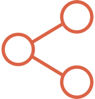
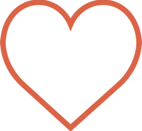
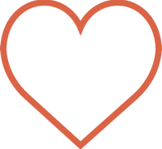

勢不可擋，張團畯制霸台東三鐵
| 文／攝影 張碩 |


 

|
【記者張碩台東報導】「2016台東之美鐵人三項國際賽」1日在台東活水湖開賽，吸引逾2400名鐵人參加。來自台北市立大學的張嘉家拿下半程超鐵賽程、奧運標準賽程女子組雙冠軍。同樣來自北市大的張團畯則是以4小時12分47秒的成績抱得冠軍，打破台灣鐵人三項113公里賽程紀錄。
張團畯在半程超鐵賽拿出實力，第一項游泳階段即拉開和後面選手團的差距，上岸後以足足兩分鐘領先位居第二的楊茂雍。他在自由車、路跑兩階段表現依然勢不可擋，沒有懸念拿下冠軍。
張團畯以20分鐘的差距大勝楊茂雍，從近500名選手中脫穎而出，創下全國鐵人113公里賽程最快紀錄。他說：「今天主要是跟自己比賽，想創下一個台灣最快的紀錄。」
今年暑假，張團畯移地至普吉島訓練，增加騎車和跑步的訓練量，最近兩個月也著重在長距離的訓練。針對這次比賽狀況，他表示，游泳時感覺並不好，反而在騎車階段有被自己的表現嚇到。
半程超鐵賽場上另一個焦點落在北市大年僅20歲的謝育宏和30歲國手楊茂雍之間的拉鋸戰。謝育宏在游泳階段以男子組第三的成績上岸，只落後楊茂雍些微差距，並且把握自由車階段一舉超前。但是面對征戰國際賽多年、寶刀未老的楊茂雍，謝育宏在最後的跑步階段仍然被超越，和亞軍失之交臂。
女鐵人常勝軍張嘉家，在半程超鐵賽、奧運標準賽女子組賽程皆拿下冠軍。她表示，最近在游泳的訓練量有提升，半程超鐵賽程中的游泳項目只花了27分半。上岸時張嘉家在所有選手中排名第三，巾幗不讓鬚眉的表現，讓現場觀眾拍手叫好。
鐵人三項是結合游泳、自由車、路跑三項有氧運動於一體的競賽。選手須於規定的時間內，按順序完成比賽，全程不中斷。台東之美鐵人三項國際賽是國內少數較具規模的大型鐵人三項賽事，每年皆吸引上千名鐵人共襄盛舉。 本次賽事天氣狀況多變，除了雷雨，還發生小土石流影響比賽路線。對選手不只是體力，更是意志力的考驗。

【記者張碩台東報導】「2016台東之美鐵人三項國際賽」1日在台東活水湖開賽，吸引逾2400名鐵人參加。來自台北市立大學的張嘉家拿下半程超鐵賽程、奧運標準賽程女子組雙冠軍。同樣來自北市大的張團畯則是以4小時12分47秒的成績抱得冠軍，打破台灣鐵人三項113公里賽程紀錄。
張團畯在半程超鐵賽拿出實力，第一項游泳階段即拉開和後面選手團的差距，上岸後以足足兩分鐘領先位居第二的楊茂雍。他在自由車、路跑兩階段表現依然勢不可擋，沒有懸念拿下冠軍。
張團畯以20分鐘的差距大勝楊茂雍，從近500名選手中脫穎而出，創下全國鐵人113公里賽程最快紀錄。他說：「今天主要是跟自己比賽，想創下一個台灣最快的紀錄。」
今年暑假，張團畯移地至普吉島訓練，增加騎車和跑步的訓練量，最近兩個月也著重在長距離的訓練。針對這次比賽狀況，他表示，游泳時感覺並不好，反而在騎車階段有被自己的表現嚇到。
半程超鐵賽場上另一個焦點落在北市大年僅20歲的謝育宏和30歲國手楊茂雍之間的拉鋸戰。謝育宏在游泳階段以男子組第三的成績上岸，只落後楊茂雍些微差距，並且把握自由車階段一舉超前。但是面對征戰國際賽多年、寶刀未老的楊茂雍，謝育宏在最後的跑步階段仍然被超越，和亞軍失之交臂。
女鐵人常勝軍張嘉家，在半程超鐵賽、奧運標準賽女子組賽程皆拿下冠軍。她表示，最近在游泳的訓練量有提升，半程超鐵賽程中的游泳項目只花了27分半。上岸時張嘉家在所有選手中排名第三，巾幗不讓鬚眉的表現，讓現場觀眾拍手叫好。
鐵人三項是結合游泳、自由車、路跑三項有氧運動於一體的競賽。選手須於規定的時間內，按順序完成比賽，全程不中斷。台東之美鐵人三項國際賽是國內少數較具規模的大型鐵人三項賽事，每年皆吸引上千名鐵人共襄盛舉。 本次賽事天氣狀況多變，除了雷雨，還發生小土石流影響比賽路線。對選手不只是體力，更是意志力的考驗。